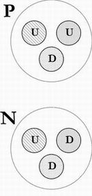

| inicio | | | | | @ | ||
Tres cuarcos para Don Marcos
La física roba palabras al lenguaje común, les da un sentido especial y arbitrario, y después pretende, injustamente, que el público general las use con el nuevo significado físico correcto. Por ejemplo, temperatura. Temperado, o templado, significa bien ajustado, moderado, y se usaba para referirse a una bebida, u otra cosa, que no estuviera ni muy fría ni muy caliente. Temperatura, entonces, y en lenguaje llano, es el grado de moderación o de sensación agradable que se percibe al tomar contacto con un cuerpo tibio. Pero aparece la física con su mirada severa, y exclama que no, que de ahora en más la temperatura será una magnitud física dada por la escala termométrica (sea de mercurio, alcohol o gas), o más modernamente, por la energía cinética media molecular [1].
Lo mismo hace la matemática, que no se queda atrás en el saqueo de palabras como hipérbole, parábola y elipsis, que significan, respectivamente, exageración, comparación y omisión. Ejemplo de hipérbole es ‘¡Te lo dije mil veces!’; de parábola, la de la prédica de los profetas, semejante a semillas de las que algunas germinan, mientras otras caen en sitios estériles; de elipsis, la frase ‘quienes se van de la Casa Rosada en helicóptero’, para referirse a María Estela Martínez o a Fernando de la Rúa, sin tener que nombrarlos directamente.
Pero para la matemática, hipérbola, parábola y elipse son tres curvas cónicas, esto es, que resultan de cortar un cono con un plano, según sea el plano paralelo a dos rectas del cono, a una, o a ninguna.
Cada vez que se descubren nuevas partículas, hay que salir a robar más y más palabras, para darles un significado anormal y atravesado con respecto al que tenían hasta entonces, y censurar a sus legítimos dueños cuando se niegan a usarlas como queremos los físicos [2].Un ejemplo interesante es el de los quarks. Todos sabemos que los átomos se componen de un núcleo formado por protones y neutrones, alrededor del cual hay electrones.
Los protones y neutrones, junto con los mesones, se clasifican como hadrones Los hadrones son partículas subatómicas caracterizadas por una interacción nuclear de la llamada fuerte. Hadros significa espeso, tupido, abundante, maduro, crecido y fuerte en griego; y meso, intermedio en el mismo idioma.
Los hadrones están compuestos por tres quarks cada uno. Los quarks aparecen siempre de a tres, y su nombre deriva de una obra literaria La palabra la tomó el físico Murray Gell-Mann de la novela El velorio de Finnegan (Finnegan’s Wake, James Joyce, 1939) en la que aparece la frase ‘¡Tres cuarcos para Don Marcos!’, Three quarks for Muster Mark!, posiblemente oída por el escritor irlandés en una cervecería, donde un parroquiano algo bebido se habría equivocado cuando ordenó, no se sabe si en broma, tres cuartos de galón (casi tres litros) para una sola persona.
|  | Un protón está formado por tres quarks; uno azul, uno rojo y otro verde, que en conjunto hacen una partícula incolora. Dos de los quarks son arriba (up), y el tercero es un quark abajo (down). Las cargas son de dos tercios para los quarks U, y de menos un tercio para el D; eso totaliza una carga de tres tercios, o la unidad. Un neutrón, en cambio, se compone de un quark U y dos quarks D, de colores azul, rojo y verde. La particula resulante es incolora, y esta vez la suma de cargas eléctricas da cero: dos tercios, menos un tercio, menos un tercio. |
En los ambientes educativos se oyen objeciones contra este lenguaje tan irreal y simbólico, que habla de colores y sabores [4] para las partículas subatómicas, cuyo tamaño es mucho más pequeño que el de la longitud de onda de la luz visible, o el de las moléculas que reaccionan químicamente en nuestras papilas gustativas.
Pero eso le pasa a todo el lenguaje, no importa en qué se lo emplee. La estructura del pensamiento es intrínsecamente metafórica, y sólo podemos pensar en algo real y concreto, si lo relacionamos con otros conceptos, sensibles o no.
----------------
1. La energía cinética es la energía de movimiento, y se calcula, en julios, como Ec = ½ m v2, donde m es la masa de la molécula, en kilogramos, y v su ve-locidad, en metros por segundo (m/s). La relación entre esa energía y la tem-peratura es Ec = K.T, donde T es la temperatura absoluta, en kelvin (K). Para obtener la temperatura absoluta, a la ordinaria centígrada, o Celsius, se le suman 273,16 grados. K es la constante de Boltzmann, 1,3806503 × 10–23 m2 kg s–2 K–1. No se debe confundir la K de kelvin, con la K de la constante de Boltzmann. (Hay más magnitudes físicas que letras mayúsculas y minúsculas de todas las lenguas vivas y muertas.)
2. Inicialmente se usó la palabra átomo, que significa indivisible, para designar la menor porción imaginable de materia. La palabra sigue en pie, pero los átomos se dividen en protones, neutrones y electrones. Los protones y neutrones se dividen en quarks, y no se sabe en qué se dividen éstos a su vez, si es que realmente se pueden dividir. La palabra elemental para referirse a muchas partículas, sugiere que no se podrán descomponer en otras; pero la historia de la física muestra que lo que se creía indivisible, estalla un día en mil pedazos.
3. Quizás, en algún momento, los investigadores se hayan preguntado: ¿Qué cosas conocidas hay, que sean dos, y que superpuestas se neutralicen? La respuesta obvia fue: las cantidades positivas y negativas; de ahí que hoy hablemos de carga positiva y negativa. Del mismo modo, podemos imaginar la pregunta: ¿Qué cosas conocidas hay, que sean tres, que superpuestas se neutralicen y que tengan, además, su versión opuesta o complementaria? La comparación con los colores resulta natural puesto que, precisamente, el rojo, el verde y el azul suman blanco (o el cian, el magenta y el amarillo, que son sus respectivos colores complementarios, se superponen como negro); por eso, quizá, se hable hoy del color de los quarks, a pesar de que el tamaño de esas partículas se encuentra muchos órdenes de magnitud por debajo de las longitudes de onda visibles.
4. Que algo tenga un sabor extraño, o encantado, vaya y pase. Pero ¿cómo puede tener sabor a arriba, a abajo, a cima. o a fondo? ¿Qué gusto tiene el fondo? ¿El fondo de qué?
| Publicado originalmente en Divagaciones vanas y ociosas sobre la física, el arte y la cultura, Agustín Rela, Buenos Aires, 2010, Aster Lingua. Se permite su reproducción citando la fuente. Última actualización may-2018. Buenos Aires, Argentina. |